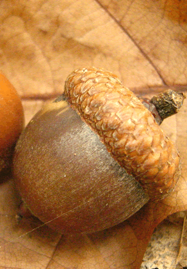
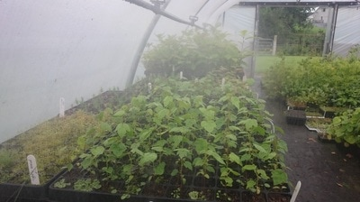
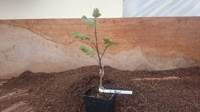
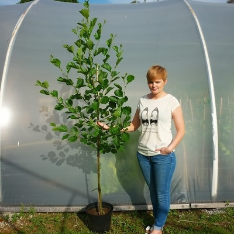
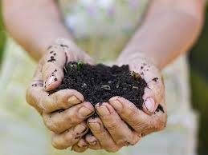
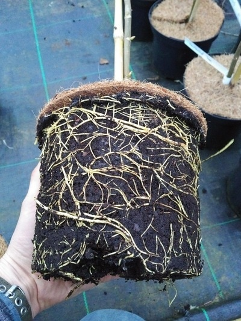
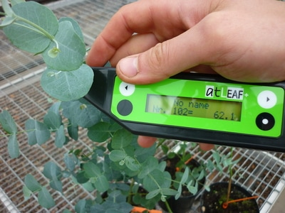
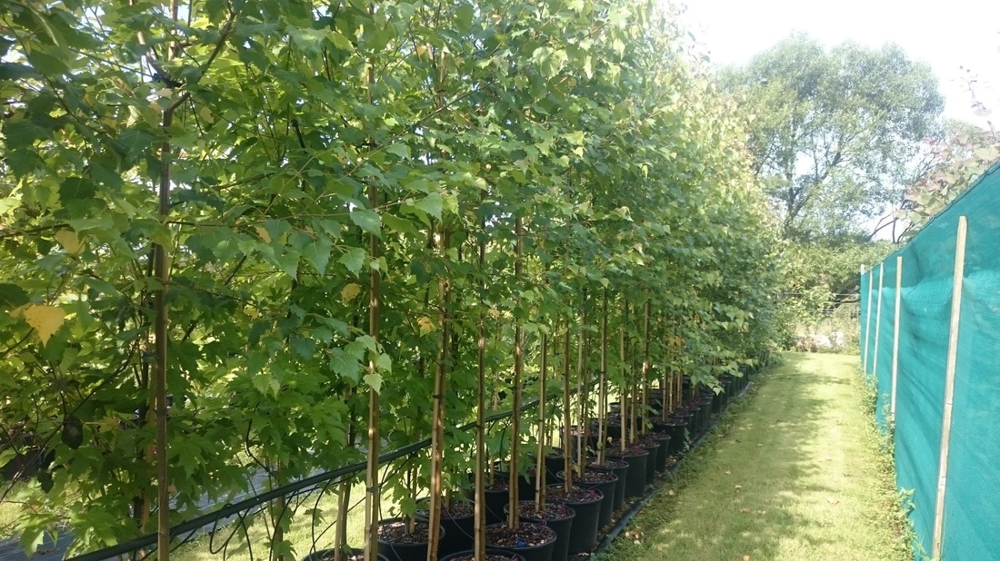

Our Process
We take pride in producing over 90% of our trees from scratch on our own nursery, mastering the skills of sowing, cutting, budding and grafting throughout the year.
Home Grown from Seed to Sale
At Papervale Trees we take pride in producing over 90% of our trees from scratch on our own nursery.
We believe the horticulture industry has become over-reliant on importing plants from mainland Europe. Whilst sourcing trees and plants from Europe may have a role to play, the unregulated importation of plant material has brought devastating pests and diseases into the UK, threatening our native flora and fauna.
We take the time to master the skills of sowing seed, taking cuttings, budding and grafting throughout the year to ensure we have our own supply of homegrown trees. We strongly support the ethos of sourcing trees locally and selecting trees whose origin can be fully traced.
UKISG Certified: We are Northern Ireland's first tree nursery certified by the UK & Ireland Sourcing Guarantee, ensuring every tree is genuinely homegrown and fully traceable.




Health & Vitality
To ensure top quality trees are produced, healthy roots are paramount.
In 2011 the UK government published a White Paper aimed at reducing the amount of peat being removed from endangered wetland habitats for use in the horticulture industry. Whilst studying, Jonathan trialed various combinations of peat alternative growing media, including composted bark, wood fibre, coir and green waste, until the best blend was found.
In subsequent years this growing media mix has proven to produce exceptionally good root systems, supporting strong and healthy growth above ground. Customer feedback has also been encouraging, with trees establishing quickly and growing on well.
Before any tree leaves our nursery it is checked to ensure health and vitality. This is carried out via a non-invasive measurement of the leaf chlorophyll content. Chlorophyll content taken within a tree's leaf provides a measurable indicator of the plant's physiological condition, ensuring all our trees are in top condition when they reach you.




Peat-Free Since Day One
Committed to sustainable growing before it became industry standard.
Our carefully developed peat-free growing media has proven time and again to produce root systems that establish faster, grow stronger, and perform better in the landscape. It's better for the trees, better for the environment, and better for our customers.
From the pots we use to the way we prune and care for every tree, every decision is made with long-term health in mind. Learn more about who we are, explore our planting services, or browse our complete tree range.